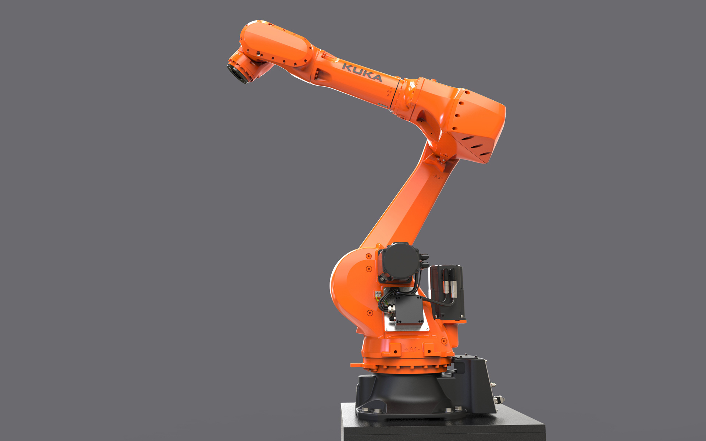
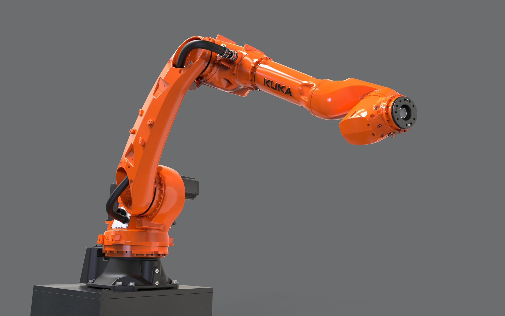
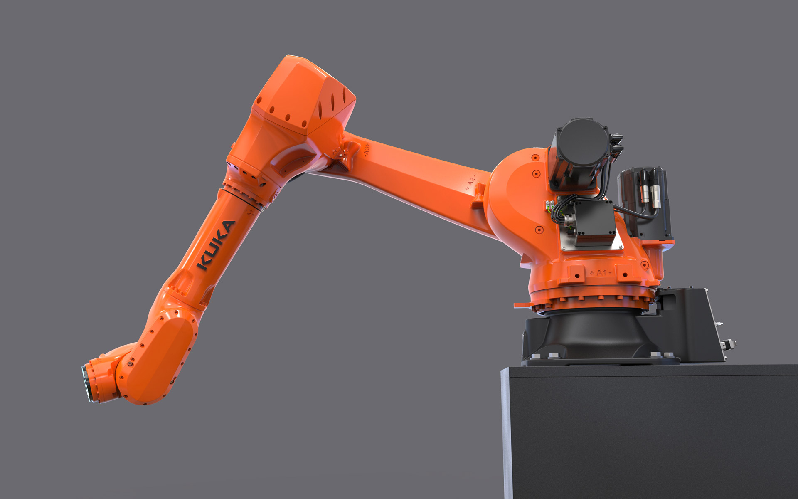
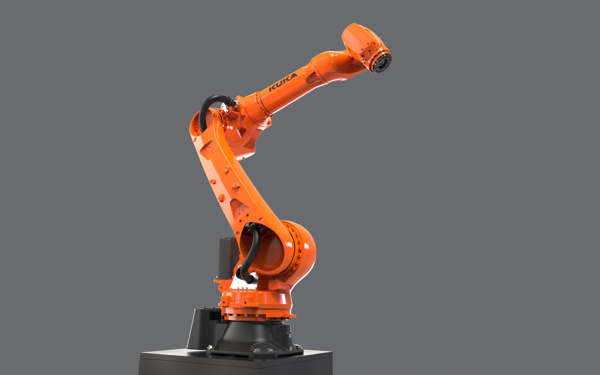

KUKA KR IONTEC 70 R 2100
Industrial Robot
KUKA KR IONTEC 70 R 2100
Industrieroboter
The KUKA IONTEC was developed for high-precision welding, assembly and packaging in seconds in the automotive sector and general industry.
The encapsulated design of the robot with its internal motors and supply lines in the upper half of the
robot ensures minimal interfering contours and ensures unhindered use. Purposefully designed cast
components contribute to the high heat dissipation from the inside
Organically designed, powerful components give the robot a lively appearance and visualize the
performance and mobility of the machine. At the same time, they mechanically ensure high flexural
strength and torsional rigidity, which is important for precise, reliable work. Flowing shape
transitions contribute to a high mechanical power flow and extreme physical dynamic properties. The
robot has no superfluous cladding elements - each component has its technical function.
It is designed as a long-term product. The load capacity of the mountable tools is 70 kg, its range is
2100 mm.
Der KUKA IONTEC wurde entwickelt für sekundenschnelles, hochpräzises Schweißen, Montieren, Verpacken in der Automotive Branche und allgemeinen Industrie.
Das gekapselte Design des Roboters mit seinen innenliegenden Motoren und Versorgungsleitungen in der
oberen Roboterhälfte sorgt für geringste Störkonturen und stellt einen hindernisfreien Einsatz sicher.
Gezielt gestaltete Gusskomponenten tragen zur hohen Wärmeableitung aus dem Inneren bei.
Organisch gestaltete, kraftvolle Bauelemente geben dem Roboter ein lebendiges Erscheinungsbild und
visualisieren die Leistungsfähigkeit und Beweglichkeit der Maschine. Zugleich sorgen sie mechanisch für
hohe Biegefestigkeit und Torsionssteifigkeit, wichtig für präzises, zuverlässiges Arbeiten. Fließende
Formübergänge tragen zu einem hohen mechanischen Kraftfluss und extremen physischen Dynamikeigenschaften
bei. Der Roboter kommt ohne überflüssige Verkleidungselemente aus - jedes Bauteil hat seine technische
Funktion.
Er ist als Langzeitprodukt ausgelegt. Die Traglast der montierbaren Werkzeuge beträgt 70 Kg, seine
Reichweite liegt bei 2100 mm.




Images © Selić Industriedesign